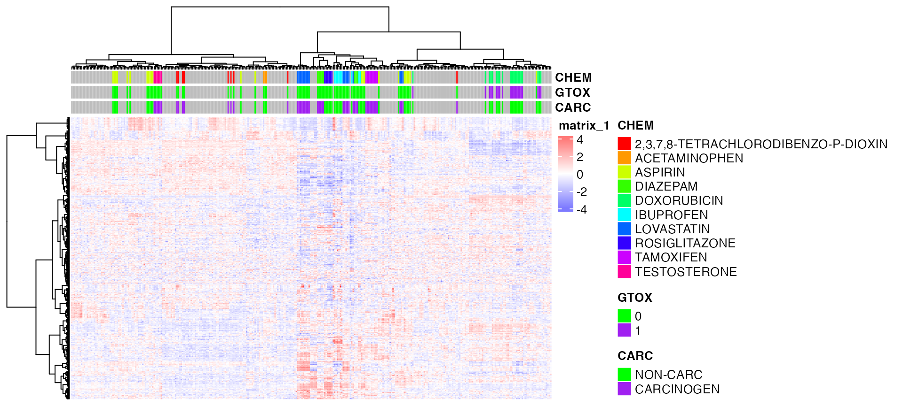
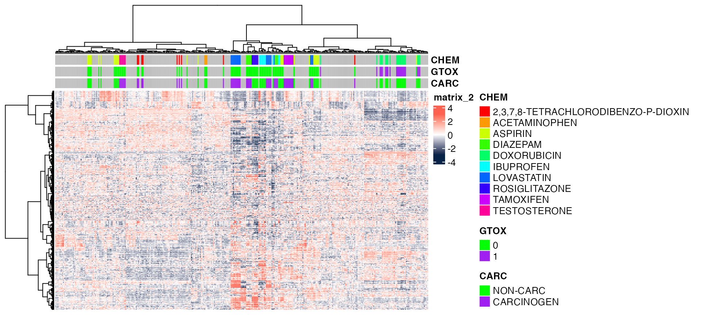
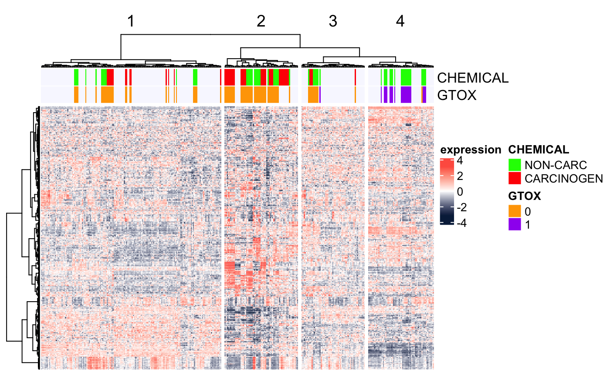
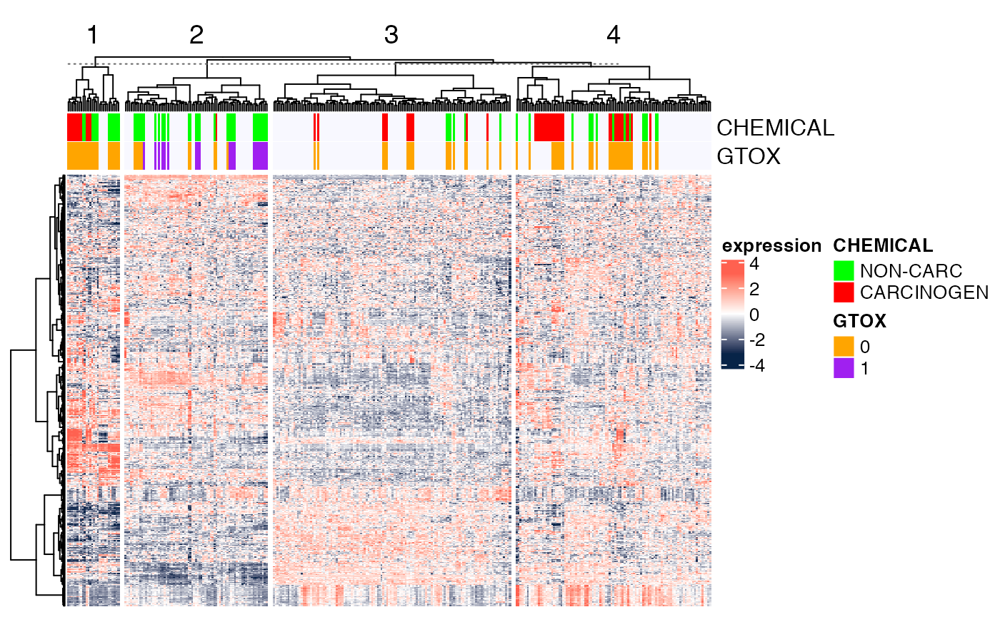

library(BS831)
library(cba)
##library(heatmap.plus)
library(pheatmap)
library(Biobase)
library(ggdendro)
library(scales)
library(gtable)
library(gridExtra)
library(ComplexHeatmap)
library(circlize)We will use the DrugMatrix subset previously described for our examples. This data corresponds to chemical perturbation experiments, whereby rats are exposed to different chemicals, and their liver’s RNA is profiled. The chemicals are annotated both in terms of their carcinogenicity and their genotoxicity, and we will use these two phenotypes to color-code the samples in the visualized heatmaps.
data(dm10)
DM <- variationFilter(dm10, ngenes=500,do.plot=FALSE)## Variation filtering based on mad .. done.
## Selecting top 500 by mad .. done, 500 genes selected.pheatmap
We first illustrate the use of the function pheatmap
from the omonimous package. This function only requires a numeric matrix
as input, and it allows for annotation of columns and rows. It can
perform different clustering methods on rows an columns, either by
specifying parameters of the clustering method to use, or by inputting
the output of free-standing clustering functions such as
hclust. Check ?pheatmap to explore different
arguments you can set, there are a lot of them.
Let us first define a simple function to create a color gradient to be used for coloring the gene expression heatmaps.
colGradient <- function( cols, length, cmax=255 )
{
## e.g., to create a white-to-red gradient with 10 levels
##
## colGradient(cols=c('white','red'),length=10)
##
## or, to create a blue-to-white-to-red gradients with 9 colors (4 blue's, white, 4 red's)
##
## colGradient(cols=c('blue','white','red'),length=9)
##
ramp <- grDevices::colorRamp(cols)
rgb( ramp(seq(0,1,length=length)), max=cmax )
}We can then establish the color coding for the expression levels (blue=low, white=medium, to red=high).
## color gradient for the expression levels (blue=down-regulated; white=neutral; red=up-regulated)
bwrPalette <- colGradient(c("blue","white","red"),length=11)Then, we will format the phenotype annotation for the columns of the
heatmap, as well as specify the colors for each category for each
variable, i.e., carcinogenicity (NA/negative/positive) and genotoxicity
(NA/0/1), for both of which we will use the same color-coding, and
chemicals. Notice the use of the function rainbow to
generate a large number of colors for the annotaiton of the
chemicals.
## color coding of the samples indicating carcinogenicity and genotoxicity
chemPalette <- c("white","green","purple") # we will use the same colors for carc and gtox
annot <- pData(DM)[, c("Carcinogen_liv", "GenTox", "CHEMICAL")]
colnames(annot) <- c("CARC", "GTOX", "CHEM")
annot$CHEM[annot$CHEM == ""] <- NA
annot$CHEM <- factor(annot$CHEM, levels = levels(annot$CHEM)[levels(annot$CHEM)!=""])
annot$GTOX <- as.factor(annot$GTOX)
annotCol <- list(
CARC = chemPalette[-1],
GTOX = chemPalette[-1],
CHEM = rainbow(length(levels(annot$CHEM)))
)
names(annotCol$CARC) <- c("NON-CARC","CARCINOGEN")
names(annotCol$GTOX) <- c("0","1")
names(annotCol$CHEM) <- levels(annot$CHEM)Next, we will create the heatmap, given the expression matrix from
DrugMatrix. Note that the argument scale = "row", specifies
that we want to scale each row (or gene) to mean zero, and let the
colors denote the number of standard deviations from the mean. Below, we
show the hetamaps with a couple of different codings of the color
gradient, one using grDevices::colorRamp utilized in the
function colGradient, and the other using
circlize::colorRamp2. This is just to show there are
multiple ways you can specify a color gradient.
grDevices::colorRamp
pheatmap(exprs(DM),
color=bwrPalette,
annotation_col = annot,
annotation_colors = annotCol,
clustering_method = "ward.D", # default is 'complete'
show_rownames = FALSE,
show_colnames = FALSE,
scale = "row")
circlize::colorRamp2
pheatmap(exprs(DM),
color=circlize::colorRamp2(c(-3, 0, 3), c("#072448", "white", "#ff6150")),
annotation_col = annot,
annotation_colors = annotCol,
clustering_method = "ward.D", # default is 'complete'
show_rownames = FALSE,
show_colnames = FALSE,
scale = "row")
ComplexHeatmap
Here, we illustrate the use of Bioconductor package ComplexHeatmap,
one of the most recently developed and most versatile. Its
functionalities go well beyond the ones illustrated here.
Here, we show the heatmap ordered by hierarchical clustering (both
rows and columns), with the columns split into the four main clusters
(as would be determined by cutree(...,k=4)). As explained
in the package’s
manual, “[i]f row_km/column_km is set or
row_split/column_split is set as a vector or a data frame,
hierarchical clustering is first applied to each slice which generates k
dendrograms, then a parent dendrogram is generated based on the mean
values of each slice.”
## Scale expression by row
print(BS831::scale_row)## function(eset){
## rowz<-t(apply(Biobase::exprs(eset), 1, function(z)
## scale(z)))
## Biobase::exprs(eset)<-rowz
## return(eset)
## }
## <environment: namespace:BS831>
DMscaled <- BS831::scale_row(DM)
# Take columns you want from phenotype data
ha.t <- HeatmapAnnotation(CHEMICAL=DMscaled$Carcinogen_liv,
GTOX=as.factor(DMscaled$GenTox),
na_col="ghostwhite",
col=list(CHEMICAL=c("NON-CARC"="green",CARCINOGEN="red"),
GTOX=c('0'="orange",'1'="purple")))
Heatmap(Biobase::exprs(DMscaled),
name="expression",
col=circlize::colorRamp2(c(-3, 0, 3), c("#072448", "white", "#ff6150")),
top_annotation=ha.t,
cluster_rows=TRUE,
cluster_columns=TRUE,
clustering_distance_rows="euclidean",
clustering_method_rows="ward.D",
clustering_distance_columns="euclidean",
clustering_method_columns="ward.D",
column_split=4,
show_parent_dend_line=TRUE,
row_title="",
show_column_names=FALSE,
show_row_names=FALSE)
In the following example, we use k-means clustering instead to split
the dataset into four clusters (column_km=4) and then we
perform hierarchical clustering within each cluster. To ensure
reproducibility of results (since k-means has a random component), we
set the random seed first.
set.seed(123) ## for reproducibility of the k-means results
Heatmap(Biobase::exprs(DMscaled),
name="expression",
col=circlize::colorRamp2(c(-3, 0, 3), c("#072448", "white", "#ff6150")),
top_annotation=ha.t,
cluster_rows=TRUE,
cluster_columns=TRUE,
clustering_distance_rows="euclidean",
clustering_method_rows="ward.D",
clustering_distance_columns="euclidean",
clustering_method_columns="ward.D",
column_km=4,
show_parent_dend_line=TRUE,
row_title="",
show_column_names=FALSE,
show_row_names=FALSE)